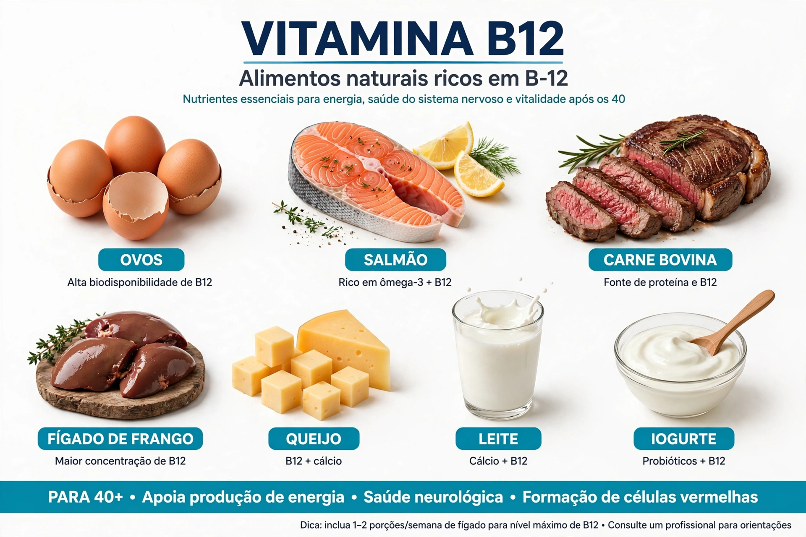
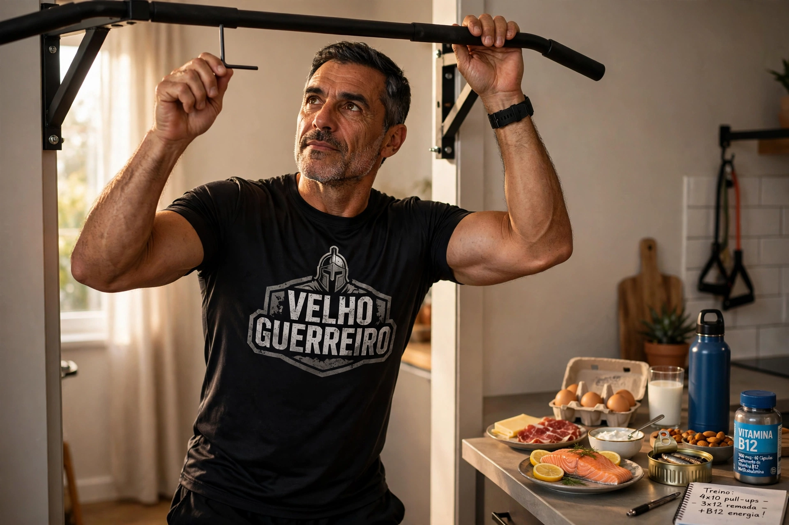

Importância da Vitamina B12 para um Excelente Desempenho Físico Depois dos 40
Você pode ter o melhor plano de treino e uma dieta bem ajustada, mas se o seu organismo estiver com deficiência de vitamina B12, a força e a resistência simplesmente não virão. Eu senti isso na pele em 2025: treinava 4x por semana, comia certo, mas vivia com perna pesada e sono à tarde. Meu exame deu B12 em 210 pg/mL (o ideal é acima de 400). Corrigi e meu rendimento na barra e na corrida voltou em 3 semanas.
Também conhecida como cobalamina, a B12 é um micronutriente essencial que atua nos bastidores da produção de energia celular e no transporte de oxigênio para os músculos. Conforme envelhecemos, a capacidade de absorção pelo sistema digestivo cai - estima-se que até 20% dos homens acima de 40 tenham níveis baixos sem saber.

1. Como a Vitamina B12 Impulsiona a Performance Física
A B12 não constrói músculo como a proteína, mas sem ela suas células ficam sem combustível e sem oxigênio:
- Formação de Hemácias e Oxigenação: Indispensável para criar glóbulos vermelhos. Mais hemácias = mais oxigênio para o músculo durante treino intenso. Sem isso, falta de ar precoce.
- Conversão de Nutrientes em Energia: Coenzima no metabolismo de carboidratos e gorduras, transforma comida em ATP, a moeda de energia muscular.
- Proteção do Sistema Nervoso: Mantém a bainha de mielina intacta, garantindo que o comando do cérebro chegue rápido ao músculo. Isso melhora força e coordenação.
- Síntese de Proteínas e Recuperação: Participa do metabolismo de aminoácidos, auxiliando reparo das fibras após treino de força. Essencial para 40+ que já se recupera mais lento.
2. Sinais de Alerta: Como Identificar a Deficiência
A falta avança silenciosa. Antes da anemia, seu corpo avisa com queda de rendimento:
1. Fadiga Muscular Precoce: Cansaço extremo ou pernas pesadas em cargas que antes eram fáceis.
2. Névoa Mental: Falta de foco, tontura leve ao levantar rápido ou perda de ritmo na série.
3. Formigamento: Dormência em mãos ou pés, por comprometimento dos nervos periféricos.
4. Língua Lisa e Irritação: Feridas na boca e língua mais avermelhada são sinais clássicos.
Se notar isso, peça ao médico: Hemograma + Vitamina B12 + Ferritina. Custa barato e vale ouro.

3. Fontes Alimentares e Quando Suplementar
B12 é quase exclusiva de origem animal. Tabela prática que uso no meu dia a dia:
| Alimento (100g) | B12 aproximada | Obs. 40+ |
|---|---|---|
| Fígado bovino | 70 mcg | Rico, mas 1x/mês basta |
| Sardinha | 8 mcg | Minha favorita: barata e ômega 3 |
| Ovos (2 unid) | 0,9 mcg | Consumo diário |
| Carne bovina | 5 mcg | Almoço 3x/semana |
Vegetarianos, veganos e quem usa omeprazol/metformina tem risco 3x maior de deficiência. Nesses casos, suplementação com metilcobalamina 1000mcg sublingual 2x/semana (conforme orientação médica) resolve.
Eu hoje faço 6 meses de alimentação caprichada + 6 meses com suplemento de 500mcg, sempre com exame de controle. Não faço megadose sem exame.
Cardápio Grátis do Velho Guerreiro
Baixe meu cardápio rico em B12 - presente pra você:
📖 Cardápio Grátis B12Conclusão e Próximo Passo
B12 é a base invisível da força depois dos 40. Sem ela, transporte de oxigênio cai, fadiga instala e evolução trava. Não é sobre tomar polivitamínico caro: é sobre comer comida de verdade 80% do tempo, fazer exame 1x ao ano e corrigir quando precisa.
Se você tem mais de 40, treina e vive cansado, comece pelo exame. Foi o que virou minha chave.